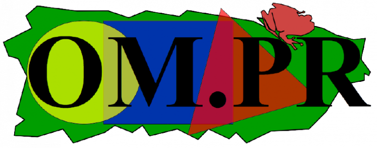

Ph.D. Candidate in Biostatistics
I have always been interested in mathematics and its problem-solving challenges. This interest led me to earn a Bachelor’s degree in pure Mathematics,
where I gained a solid foundation in both theoretical and applied mathematics.
During my Master of Science in Mathematics (Statistics Option) at the University of Puerto Rico, I expanded my academic and professional skills.
I had the privilege of teaching Pre-Calculus I, Pre-Calculus II, and Statistics courses, which deepened my passion for teaching and mentoring. In addition, I participated in academic support initiatives
for freshmen under CRRSAA grants.
Now, as a PhD student in Biostatistics at The University of Iowa, I am developing Bayesian machine learning models to improve prehospital stroke triage,
using large-scale clinical data to simulate and evaluate different triage strategies. At the same time, I work on a Lyme disease vaccine project,
building Bayesian GLMMs and implementing MCMC algorithms to estimate vaccine effectiveness,
assess model convergence, and summarize results to inform intervention strategies.
| University of Iowa | Ph.D. Student-Biostatistics |
| University of Puerto Rico | M.S. Statistics |
| University of Antioquia | B.S. Mathematics |
I am part of the Olimpiadas Matemáticas de Puerto Rico (OMPR) team, which aims to popularize mathematics in Puerto Rico while identifying and
supporting mathematical talent among students.
